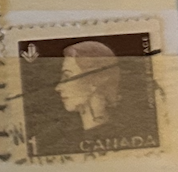
| SOURCE | TITLE| IMAGE MATCH | click to source page |
| Mystic Stamp Company | 407 - 1963 Canada - Mystic Stamp Company | 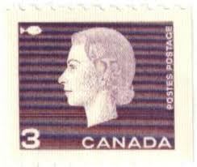 |
| Colnect | Canada : Stamps [Year: 1963] [1/10] : Colnect 📮 | 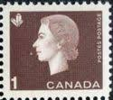 |
| Extremely rare stamp Canadian fine grade buy now clifton Nottingham can post call me directly on 07 | 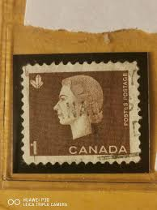 | |
| Blogger.com | The Cameo Issue of 1962-1967 An Overview | 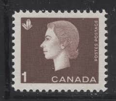 |
| HipStamp | Canada 401 | Canada, General Issue Stamp / HipStamp | 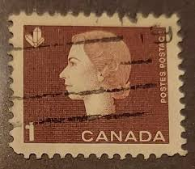 |
| Stamp Community Forum | G Overprint On Canadian Stamps - Stamp Community Forum | 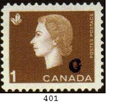 |
| Arpin Philately | Buy Canada #401ais - Queen Elizabeth II (1963) 1¢ - Single with straight edge, from 401ai | Arpin Philately |  |
| Todocolección | canada 1 cents rey george v.. año 1910.. - Buy Antique stamps of Canada on todocoleccion | 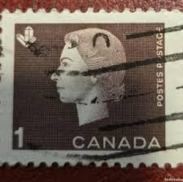 |
| Colnect | Stamp: Queen Elizabeth II, wheat sheaf (Canada(Queen Elizabeth II - 1962-63 - Cameo Issue) Mi:CA 352Exl,Sn:CA 405asL 📮 |  |
| Todocolección | canada 1964 sello usado - 15/45 - Buy Antique stamps of Canada on todocoleccion | 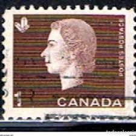 |
| Wikipedia | Crystallography on stamps - Wikipedia | 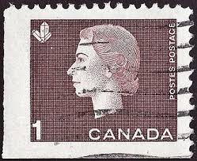 |
| Getty Images | 346 Postage Stamp Queen Stock Photos, High-Res Pictures, and Images - Getty Images | 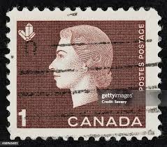 |
| Alamy | Elizabeth ii hi-res stock photography and images - Alamy | 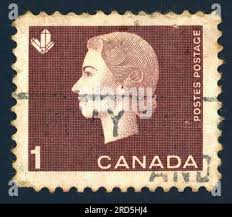 |
| Stampsandcanada | Stampsandcanada - Candians stamps prices and values - 1960 to 1969 - Canadian stamps | 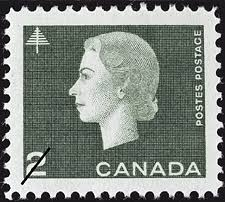 |
| HipStamp | Canada #401 Queen Elizabeth II and Crystal; Used | Canada, General Issue Stamp / HipStamp | 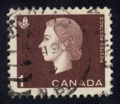 |
| Stamp Community Forum | Rare? Canadian 1 Cent Stamp, What Is It Whered It Come From - Stamp Community Forum | 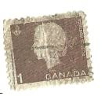 |
| IDCrawl | Mary Laureles's Instagram, Twitter & Facebook on IDCrawl | 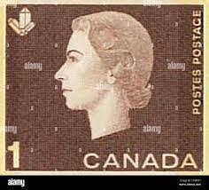 |
| All Nations Stamp and Coin | Canada #401 VFNH 1963 1c QEII Preprinting Crease | All Nations Stamp and Coin | 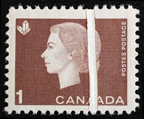 |
| eBay | B&D: 1873 U.S. Scott 158 3c green Washington Cont'l Banknote Co.--SOTN sun cxl | eBay | 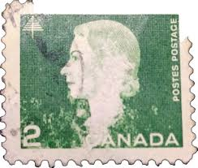 |
| HipStamp | Canada 403, 3c Elizabeth, used, VF | Canada, General Issue Stamp / HipStamp | 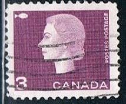 |
| How many stamps : r/CanadaPost | 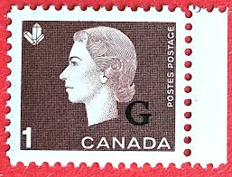 | |
| Alamy | Queen elizabeth 1963 hi-res stock photography and images - Alamy | 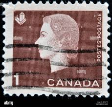 |
| Dreamstime.com | 608 Newspaper Canada Stock Photos - Free & Royalty-Free Stock Photos from Dreamstime | 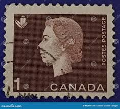 |
| Alamy | Queen Elizabeth II, postage stamp, Canada, 1962 Stock Photo - Alamy | 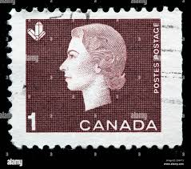 |
| eBay | Canada 4 Cent Stamp Queen for sale | eBay | 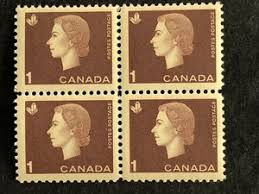 |
| Alamy | Queen Elizabeth II. Postage stamp issued in Canada in 1960s Stock Photo - Alamy | 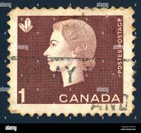 |
| HipStamp | Browse Listings / HipStamp | 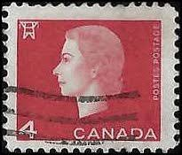 |
| Shutterstock | Post Stamp Uk: Over 8,745 Royalty-Free Licensable Stock Photos | Shutterstock | 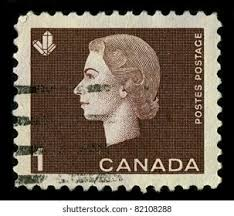 |
| eBay | Machine Cancel Canadian Mint Stamps for sale | eBay | 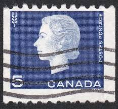 |
| Alamy | Postage stamp canada elizabeth hi-res stock photography and images - Alamy | 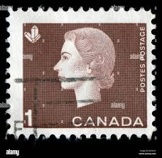 |
| Dreamstime.com | 5,353 Canada United Kingdom Stock Photos - Free & Royalty-Free Stock Photos from Dreamstime - Page 12 | 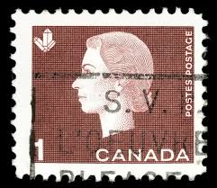 |
| Mercari | China 1956 Stamp | Mercari | 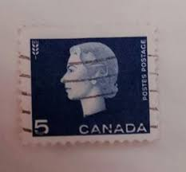 |
| Mystic Stamp Company | MFN291 - 2022 Queen Elizabeth II, Platinum Jubilee, Mint Stamp, Canada - Mystic Stamp Company | 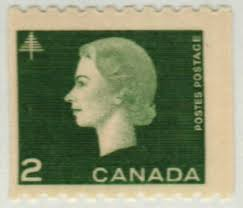 |
| Find Your Stamps Value | Value of canada postage 3 cents stamps | 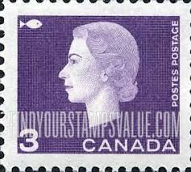 |
| Alamy | Canadian stamp hi-res stock photography and images - Alamy |  |
| Poshmark | Other | 1963 Queen Elizabeth Ii Canadian Stamp | Poshmark | 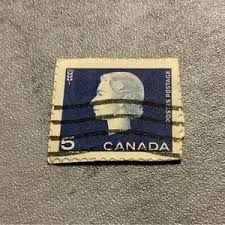 |
| Dreamstime.com | 02.09.2020 Divnoe Stavropol Territory Russia Postage Stamp Canada 1962 Queen Elizabeth II Portrait on the Red Background Editorial Photo - Image of mark, britain: 175171751 |  |
| HipStamp | Canada #401P 1 cent Queen Elizabeth Stamp mint OG NH VF | Canada, General Issue Stamp / HipStamp | 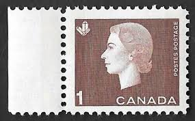 |
| Osta | Kanada " ELIZABETH II " 1963 (247642511) - Osta.ee | 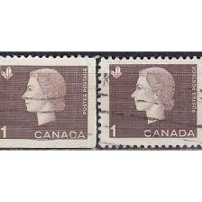 |
| Shutterstock | 7+ Thousand Queen Elizabeth Stamp Royalty-Free Images, Stock Photos & Pictures | Shutterstock | 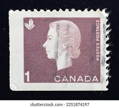 |
| What is the significance of the 34-cent postage stamp from 2001? | 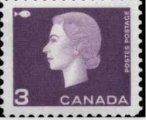 | |
| Postage Stamp Guide | Queen Elizabeth II - Green - Canada Postage Stamp | 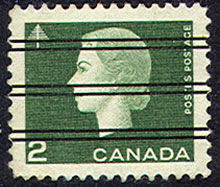 |
| Dreamstime.com | Vintage Queen Elizabeth II Postage Stamp Editorial Stock Photo - Image of collection, commemorate: 85355958 | 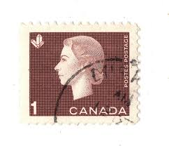 |
| Alamy | Postage stamp canada hi-res stock photography and images - Page 7 - Alamy | 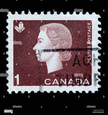 |
| eBay | Canada Stamp Scott #401, 1c, Queen Elizabeth II & Wheat, Block of 4, OG, MNH | eBay | 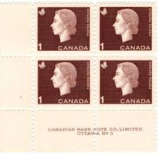 |
| HipStamp | Stamps Are Friends / HipStamp | 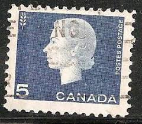 |
| Blogger.com | The Cameo Issue of 1962-1967 Part Three | 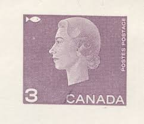 |
| The Itty Bitty Stamp Company | Canada Scott #417-429a Mint Never Hinged – The Itty Bitty Stamp Company | 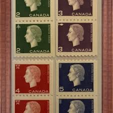 |
| Dreamstime.com | 127 Canada Stamp Set Stock Photos - Free & Royalty-Free Stock Photos from Dreamstime |  |
| Mystic Stamp Company | 406-07 - 1963 Canada - Mystic Stamp Company | 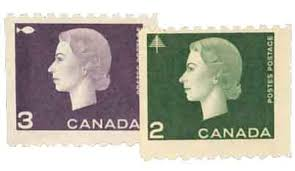 |
| HipStamp | Canada #405 5c Queen Elizabeth II and Wheat | Canada, General Issue Stamp / HipStamp |  |
| HipStamp | Canada 885: 17c Kateri Tekakwitha, 1656-1680, used, VF | Canada, General Issue Stamp / HipStamp | 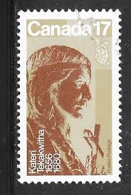 |
| On the scanner today - handwritten letters! ❤️ Scanning copies of these letters for a client. They were written by her dad and mom and sent to her great-aunt. It is quite | 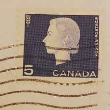 | |
| commonwealthstamps.com | Canada 1985 Quin Elizabeth II SG 1161 Fine Used | 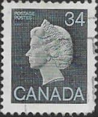 |
| Pngtree | 영어 여왕 배경 일러스트, 영어 여왕 사진 및 배경 화면 무료 다운로드 | Pngtree | 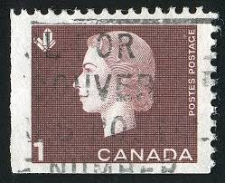 |
| Alamy | Cancelled postage stamp printed by Canada, that shows transportation in Canada and Queen Elizabeth II, circa 1970 Stock Photo - Alamy | |
| ottawaphilatelicsociety.org | Canadian Plate Blocks - Ottawa Philatelic Society / Société Philatélique d'Ottawa | |
| HipStamp | Canada #404 4c Queen Elizabeth II & Electric High Tension Tower | Canada, General Issue Stamp / HipStamp |  |
| ebid.net | Canada 1962 Queen Elizabeth II 1c Used Stamp on eBid United States | 214795946 | |
| PICRYL | Pony Express 100th anniversary stamp IMG 4371 - PICRYL - Public Domain Media Search Engine Public Domain Search |